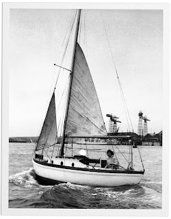
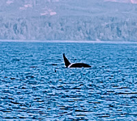

 |
| Ann Davison arriving in New York |

The following morning she sets out to sail the last few miles to 79th Street yacht basin. But it’s closed. Everyone tells her this is the only place for yachts. Where else can she go? Darkness is falling once again when a crew of Engineers take pity on her. ‘Why don’t you tie up with us at our place?’
‘Why don’t I indeed, where are you?’
‘Pier 75, the fireboat pier.’
So away they go together, moor for the night
and settle down to some serious celebrating. The 18-month voyage is over; she
has crossed the Atlantic alone (except for her faithful Felicity Ann) –
the first woman ever to do so. Her American publisher’s publicity director
joins them. The impromptu party bubbles on. Then the Coastguards arrive.
She has to move. She is expected at Pier 9, the Coastguard station at the
bottom of Wall Street, they have been looking for her. She can't refuse.
The party aboard Felicity Ann was all set for a
boat ride, so we set off, headed out into the river and embarked on a wild mad
ride, FA making fabulous speed with the aid of a four knot current […] Because
of the tide we had to enter the basin with a fair amount of way on, and there
seemed a grave possibility of us ramming the pier, the boats or even Wall
Street itself, if we did not lose some of our speed. I threw a check line to a
likely looking mariner, who caught it and wandered off with it in his hand,
looking puzzled. I shouted at him to belay and at that moment there was a
splash.
I looked round and there was my publishers’ publicity
director being hauled dripping out of the river, she having stepped ashore when
it wasn’t there. Which as a final touch to a triumphal entry into New York,
could hardly be excelled.

Our own entry into New York had been utterly conventional: British Airways from Heathrow, and then a taxi. It was August 2026, fine sunny weather. As I had followed our pilot fly the Great Circle route and then descend below the clouds for the long east coast approach I had thought of Nicolette Milnes-Walker, and then Clare Francis navigating alone through the fogs off the Grand Banks, and even potential ice bergs, with un-sophisticated equipment and the extra tension of needing to succeed as well as survive. I was on a journey to talk about them, and Ann, and other Stars to Steer By, at the Port Townsend Wooden Boat Festival. From the safety of the plane, I honoured their courage and skill.
In New York 79th Street Yacht Basin was once again closed. That didn’t matter to us -- we weren't in a small yacht with night falling; we were in a taxi heading for the hotel that Francis had booked nearby. We could look out onto the Hudson as we lay in bed. It was a quieter, emptier river than it had been when Ann was trying to negotiate it. Watching it at different moments of the day and night, during our short stay, was ineffably peaceful, even a little melancholy. This was my first visit to New York. It wasn’t at all how I’d expected to experience it.

.jpg){kind=link}
Then Francis revealed a surprise, we were to go sailing. The elegant schooner Adirondack would take us and other passengers out to the Statue of Liberty, and we would get the same view as millions of immigrants arriving on Ellis Island for processing.
.jpg){kind=link}

It was a most wonderful afternoon and perhaps set the tone for the rest of our holiday, to some extent at least. Wherever we were, we sought out the water, embarked in a variety of different vessels, felt their individual movement, and looked back at the land from the perspective of the sea – or the lake – or the harbour. In Chicago we went on a 1930s fireboat, out onto Lake Michigan and then into the city via the ‘Chicago Sanitary and Ship Canal’ – a branch of the river where the natural flow had been reversed. In Montana we rowed on Two Medicine Lake, looking into the wood for bears, but seeing none. We took ferries, from Seattle to Bainbridge Island and later from Port Angeles to Victoria.
In Port Townsend, the goal of our journey, we were
surrounded by boats of all sizes and looked out everyday onto the wide Puget
Sound. I spent a memorable couple of hours rowing and sailing as part of the
crew of a longboat, a replica of one used by Captain Vancouver in his laborious
investigation and charting of the North West Pacific Coast. Even better was the
evening sail in a replica Cape Cod catboat, small and pretty and half as wide
as she was long. She sailed very sweetly and her owner Erik clearly loved her.
He had so much to tell us about the waters we were sailing as we looked back at
the Port Townsend water front and also across the Sound to Whidbey Island and
Marrowstone Island (where we knew we had friends) and the Naval base on Indian
Island.


In Victoria, British Columbia, we rushed down the Strait of Jan de Fuca at 20 knots in a whale-watching boat with the Olympic Peninsula to port and Vancouver Island to starboard. We stopped our engines intermittently and rocked gently as we observed first orca, then humpbacks, then different varieties of seals, sea lions and cormorants on the Race Rocks ecological reserve. We ate supper, our first evening, on the slightly moving surface of Fisherman’s Wharf, where brightly coloured houses, cafes and small shops are built on foam filled concrete floats, planked with wood. Later in our stay we explored the inner areas of the harbour – I hired a kayak and Francis booked himself onto in a harbour ferry. Neither of us quite brought ourselves to venture forth in one of the bright red hot-tubs which were also available, nor the sea-planes which roared off and landed at astonishingly frequent intervals.
 |
| My own orca photo -- the naturalist on board took much better ones |


We did other things during our time away – went to museums and galleries, read books, enjoyed meals and conversations, looked out of the windows of buses, watched the countryside from the cross-continental train. I’ve written them down so I don’t forget. Yet somehow it was seeing these new places from the water that made them special to me.
And for that I thank Francis’s imaginative
planning.

I'll put the full account of our holiday on the Golden Duck website in a day or two.